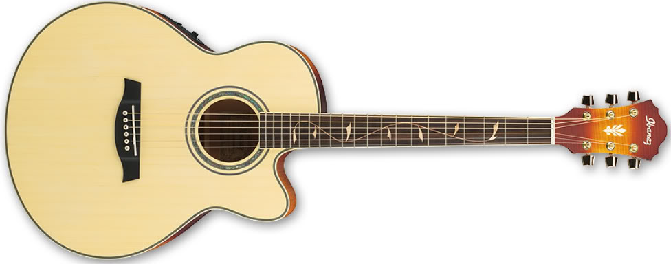
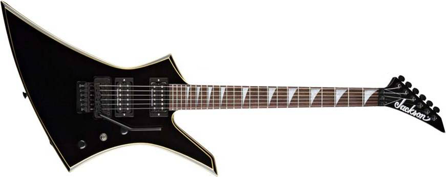

Panduan dam Pengenalan
Nov 10, 2017 Views: 2,230,493Gitar adalah sebuah alat musik berdawai yang dimainkan dengan cara dipetik, umumnya menggunakan jari maupun plektrum. Gitar terbentuk atas sebuah bagian tubuh pokok dengan bagian leher yang padat sebagai tempat senar yang umumnya berjumlah enam didempetkan. Gitar secara tradisional dibentuk dari berbagai jenis kayu dengan senar yang terbuat dari nilon maupun baja. Beberapa gitar modern dibuat dari material polikarbonat. Secara umum, gitar terbagi atas 2 jenis: akustik dan elektrik. Gitar akustik, dengan bagian badannya yang berlubang (hollow body), telah digunakan selama ribuan tahun. Terdapat tiga jenis utama gitar akustik modern: gitar akustik senar-nilon, gitar akustik senar-baja, dan gitar archtop. Gitar klasik umumnya dimainkan sebagai instrumen solo menggunakan teknik fingerpicking komprehensif.
 Gitar elektrik, diperkenalkan pada tahun 1930an, bergantung pada penguat yang secara elektronik mampu memanipulasi bunyi gitar. Pada permulaan penggunaannya, gitar elektrik menggunakan badan berlubang (hollow body), namun kemudian penggunaan badan padat (solid body) dirasa lebih sesuai. Gitar elektrik terkenal luas sebagai instrumen utama pada berbagai genre musik seperti blues, country, reggae, jazz, metal, rock, dan berbagai bentuk musik pop. Demikian Tutor singkat yang di berikan , Apa bila ada pertanyaan bisa hubungi kami di Kontak.